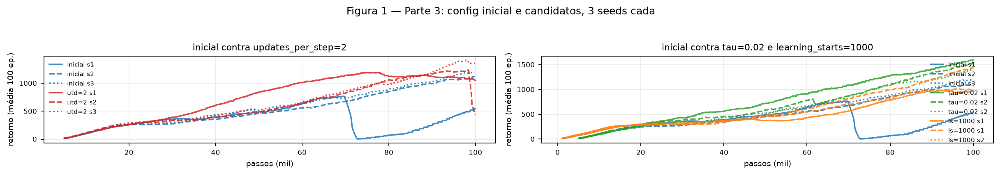
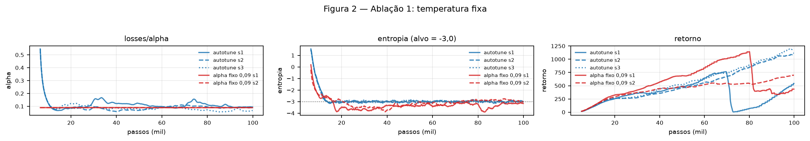
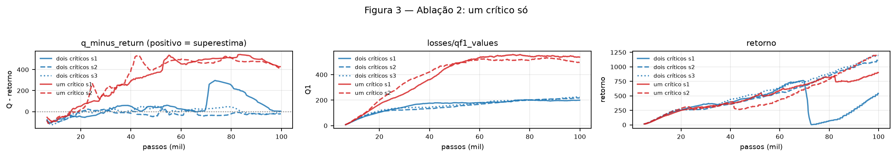
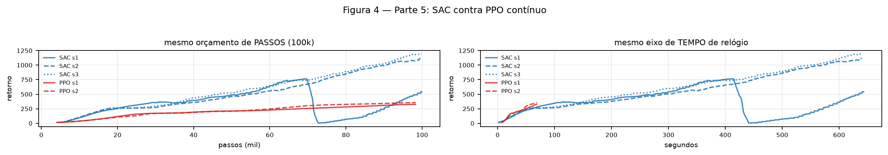

Partes 1 e 2. squashed_gaussian_sample amostra com rsample(), para o
gradiente da perda do ator chegar em μ e σ através da ação, e corrige a densidade pelo jacobiano do
tanh. compute_soft_q_target usa o mínimo entre os dois críticos menos a penalidade de
entropia, cortando o bootstrap no terminal. Os 16 testes de tests/test_sac.py passam.
Observação: o train.py do upstream quebra qualquer treino de SAC (imprime
args.algo.learning_rate, que o SACConfig não tem); corrigi no harness, sem
tocar no algoritmo.
| mudança | motivo observado | eval/mean_return | last100 | veredito |
|---|---|---|---|---|
| config inicial (CleanRL) | referência | 2226 (979–2986) | 874 (414–1142) | referência |
| updates_per_step 1→2 | nos 3 seeds do inicial o qf1_values sobe até 196/219/223 ainda em curva aos 100k, sem platô: os críticos não convergiram no orçamento | 972 (16–2604) | 1214 (1100–1338) | piora |
| tau 0,005→0,02 | o q_minus_return do inicial oscila entre −80 e +20 entre medições, compatível com rede-alvo defasada | 1789 (750–3256) | 1405 (1278–1510) | indistinguível |
| learning_starts 5000→1000 | 5% do orçamento gasto em ação aleatória, sem aprender | 1503 (979–2538) | 1095 (955–1332) | indistinguível |
Runs no wandb: inicial fh1bhsbj, u9dhy33e, 6kuhhivi; utd2 yrv8frja, rgidvdtu, lcxebxg8; tau02 j2yi2sfr, piaiyv2b, th1p5sso; ls1k t54h37tt, zjk3x3ux, qmv7jqs5; ablações 6izl7y4c, u1thbz33 e 65iky1ux, 9ws89l8h; PPO i7h1rt5e, 1hrp0765.
Leitura. O intervalo do config inicial (979 a 2986) cobre quase inteiramente os dos três
candidatos, então nenhuma diferença de média é separável da variação entre seeds. Pelo critério do
enunciado, o config final é o próprio config inicial. Duas observações que a tabela sozinha
esconde. Primeira: a minha hipótese do updates_per_step estava errada. Eu justifiquei
esse candidato porque os críticos ainda não tinham convergido, mas dobrar os passos de gradiente
derrubou duas seeds para eval 16 e 561. Com buffer de apenas 100 mil transições, mais updates sobre
os mesmos dados desestabiliza em vez de ajudar. Segunda: o eval e o last100
discordam. O config inicial tem o melhor eval (2226) e o pior last100 (874). Quem olhasse só a
curva de treino elegeria o tau=0,02 como vencedor.

autotune=false, alpha = 0,09)Escolha do valor. Nos três runs do config final o losses/alpha cai de 0,90 para
a faixa 0,067 a 0,094 até 20 mil passos e fica. Fixei em 0,09, o patamar que o próprio controlador
encontra.
Previsão (escrita antes). Diferença pequena no retorno, porque o valor fixo é o que o autotune acharia. A diferença apareceria no começo: o autotune parte de 0,90 e explora muito mais nos primeiros 20 mil passos. E a entropia deixaria de colar no alvo, já que sem o controlador ela vira consequência e não alvo.
O que aconteceu. O eval ficou em 2189 (1208 a 3170) contra 2226 do config final, dentro do
ruído, como previsto. Mas o last100 caiu de 874 para 510 (358 a 661), uma piora que
aparece na curva de treino e não na avaliação final. A parte da entropia da previsão falhou:
ela ficou em −3,06, praticamente colada no alvo de −3,0, igual ao config com autotune
(−2,99). O raciocínio errado foi tratar o alvo como se fosse imposto pelo controlador. Ele é
imposto pela perda do ator (algorithms/sac.py, termo
alpha * log_pi - min_q): com alpha no valor certo, o ótimo dessa perda já fica na mesma
entropia. O controlador escolhe o alpha, não a entropia diretamente. Runs 6izl7y4c, u1thbz33.

target_entropy = −3,0.clipped_double_q=false)Previsão (escrita antes). É a ablação que deve doer mais. Sem o mínimo entre os dois
críticos o alvo passa a usar só Q1 e o erro deixa de ser cortado pelo lado pessimista, então
qf1_values cresceria acima do baseline e q_minus_return ficaria positivo e
crescente. O retorno cairia, porque o ator maximiza um Q inflado.
O que aconteceu. A parte do diagnóstico se confirmou de forma extrema. O
q_minus_return, que no config final oscila em torno de zero (média −1,0), vai a
+461 com um crítico só, e o qf1_values sai de 210 para 524. É a assinatura
limpa da superestimação, e a linha que a explica é a do alvo em
compute_soft_q_target: trocar torch.min(next_q1, next_q2) por
next_q1 remove o viés pessimista que compensava o erro de estimativa.
Mas a previsão do retorno falhou: o eval foi 2398 (1994 a 2802), acima dos 2226 do config
final, e o last100 também (984 contra 874). Superestimar o Q em mais de 400 não impediu
o ator de aprender dentro de 100 mil passos. A explicação que me parece mais provável é que o que
guia o ator é a ordem entre ações, não o valor absoluto: se o crítico infla tudo de forma
parecida, o argmax continua apontando para o mesmo lugar. O dano da superestimação deve aparecer em
horizontes mais longos, quando o viés passa a ser desigual entre regiões do espaço de ações. Runs
65iky1ux, 9ws89l8h.

| eval/mean_return | last100 | tempo | SPS | num_updates | reuso por transição | |
|---|---|---|---|---|---|---|
| SAC (config final) | 2226 (979–2986) | 874 | 642 s | 189 | ~95.000 | ~243× |
| PPO contínuo, sem ajuste | 356 (340–373) | 341 | 69 s | 1.474 | 7.680 | 10× |
Eficiência amostral. Com os mesmos 100 mil passos o SAC chega a 2226 de eval e o PPO a 356, uma diferença de 6,3 vezes. A peça que explica isso é o replay off-policy: com buffer de 1 milhão e só 100 mil passos coletados, nada é descartado, e cada transição entra em cerca de 243 passos de gradiente (95 mil updates com lote 256, sobre 100 mil transições). No PPO cada transição é usada nas 10 épocas do seu rollout e depois jogada fora. São 24 vezes mais reuso, e é esse o regime em que o off-policy compensa. Minha previsão acertou a direção mas exagerou a magnitude: eu esperava duas ordens de grandeza de diferença no reuso, e o medido foi 24 vezes.
Tempo de relógio. A resposta inverte, como eu previa. O PPO termina os 100 mil passos em 69 segundos e o SAC leva 642, nove vezes mais, porque o SAC faz um passo de gradiente a cada passo de
ambiente enquanto o PPO faz 7.680 updates no total. Os dois tempos foram medidos com sete treinos dividindo a mesma CPU, então os valores absolutos estão inflados; como a disputa foi igual para os dois, a razão entre eles é o que vale. Se o candidato de updates_per_step=2
tivesse vencido a Parte 3, essa desvantagem dobraria: o mesmo orçamento de passos custaria o dobro do
tempo. Como ele não venceu, o config final mantém a proporção de um update por passo.
Mecanismo, peça por peça. O replay off-policy explica a vantagem amostral e o custo
por passo, que são o mesmo fato visto de dois lados. A entropia máxima aparece na Figura 2: o
alpha estabiliza em 0,09 e segura a entropia no alvo, mantendo exploração sem precisar de ruído
externo. Os dois críticos aparecem na Figura 3, mantendo o q_minus_return em zero
contra +461 da ablação. O ator reparametrizado é o que torna tudo isso treinável: sem o
rsample() o gradiente não atravessaria a ação até μ e σ, e a perda do ator não teria por
onde descer.
